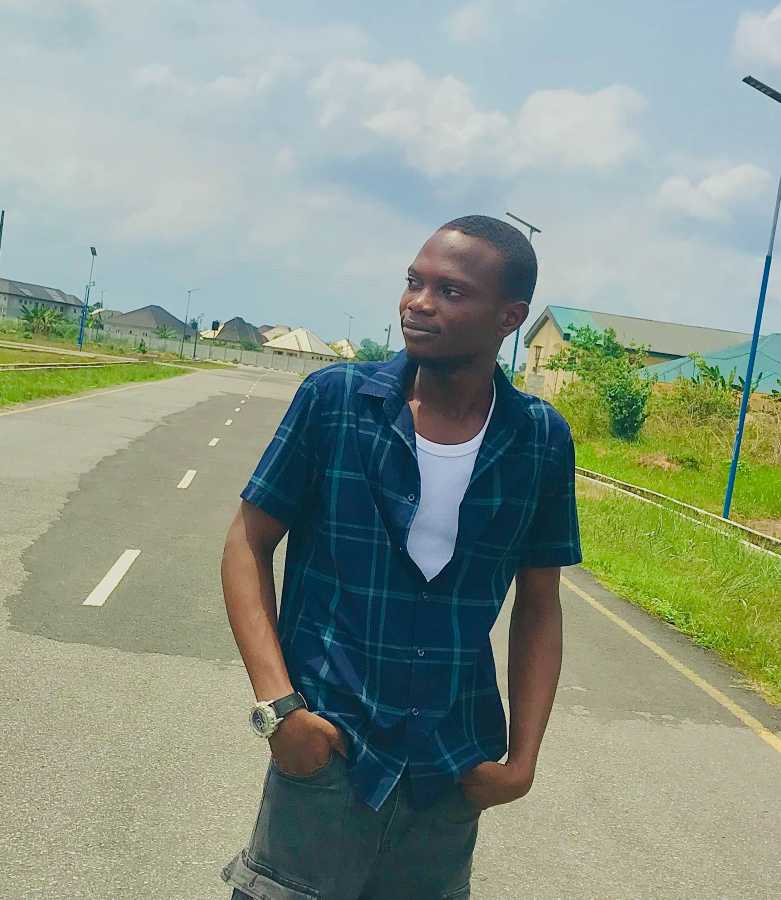

Onavino Ajenavi | WDD130
Hi. My name is Onavino Ajenavi and I am from Delta, Nigeria. I am a student of BYU Idaho. I am a student at both Brigham Young University (BYU) Idaho, studying web and computer programming online, and Delta state University (Delsu), studying Electrical Electronics Engineering on campus. As a student of Delsu, I am currently in year 3 of my 5 year academic calender. My projected graduation time is 2027, which is fast approaching. I will be graduating with a bachelors degree in Electrical Electronics Engineering. I also expect to be graduating from BYU Idaho wityh a bachelors degree in Software Development. I have passion for Engineering and I wish to improve myself however possible in that field. I also love music, movies and literature as it tends to give me another beauutiful view of life other than ones and zeros.